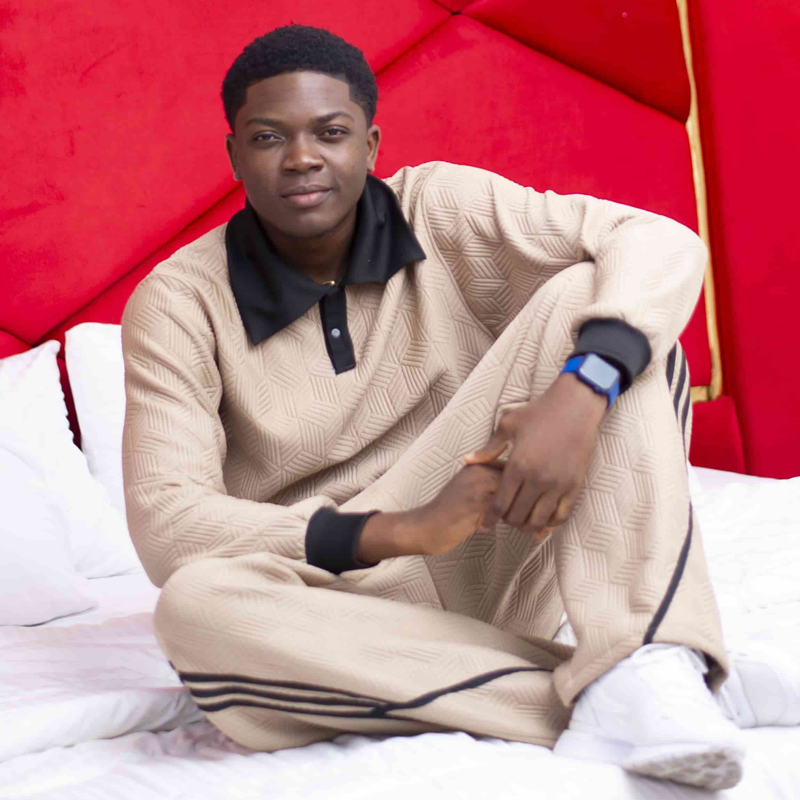

Home
About Me
I am a web and application developer with a foundation in both frontend and backend technologies. Currently, I am expanding my expertise through formal coursework in web development, where I focus on building responsive, user-centered digital experiences. My technical toolkit is focused on mastering the core pillars of web design and development, and I have a strong interest in the intersection of clean code and professional graphics design. Beyond development, I enjoy exploring video editing and brand identity, always looking for ways to bridge the gap between functional logic and aesthetic appeal. I am passionate about continuous learning and mastering skills that drive innovation in tech industry.
Student Photo
